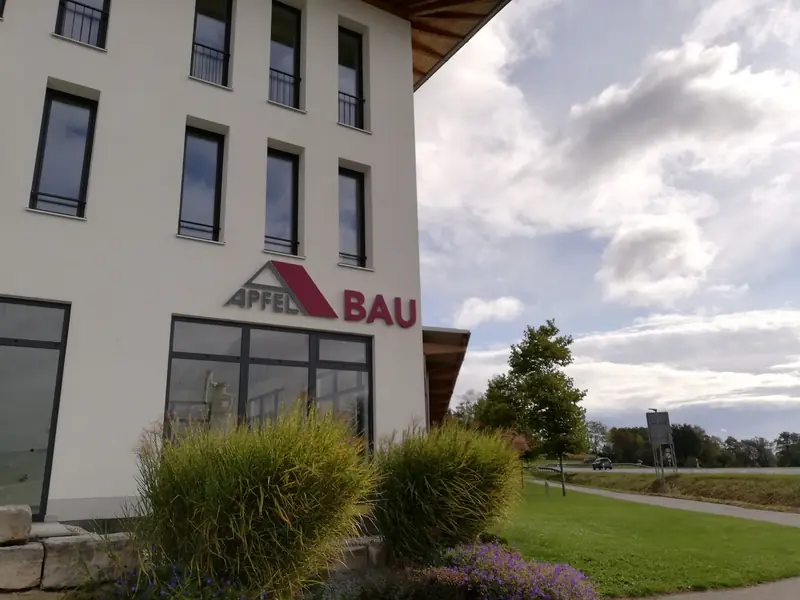
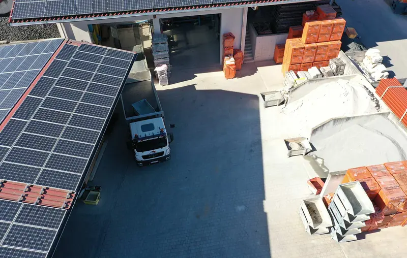
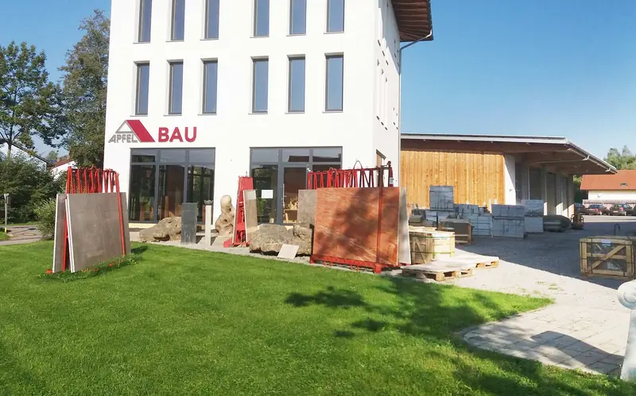
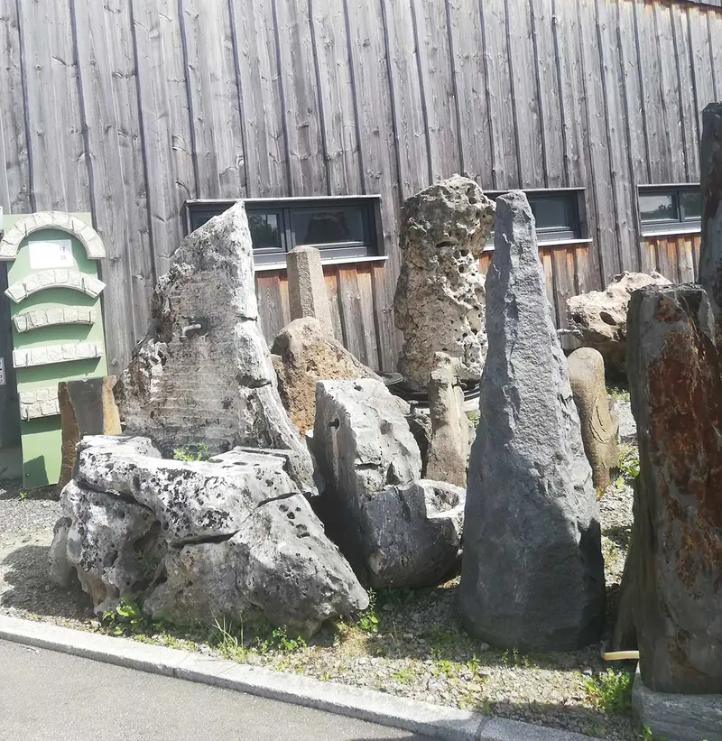
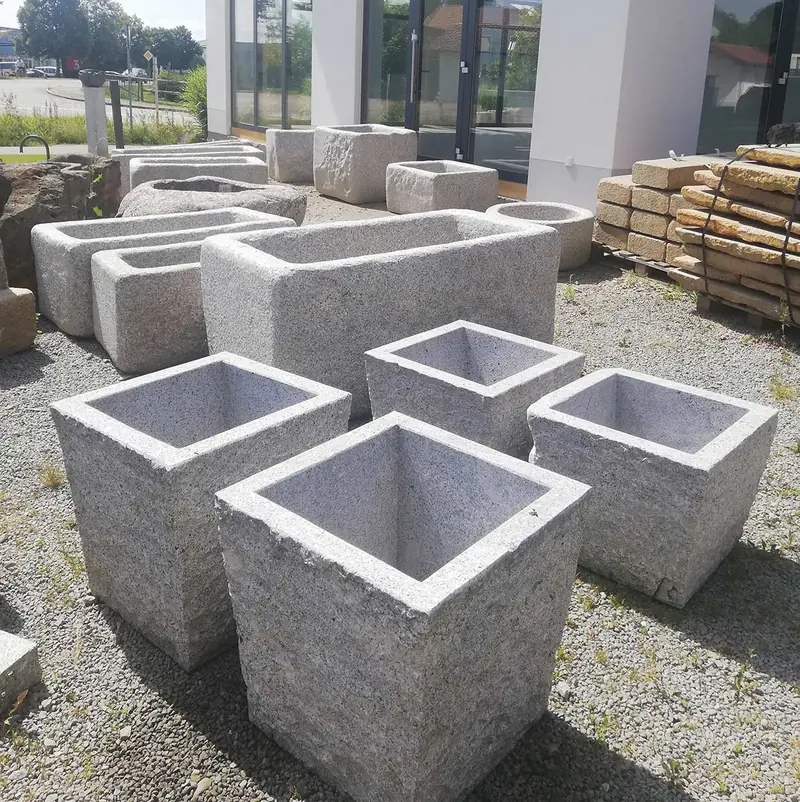
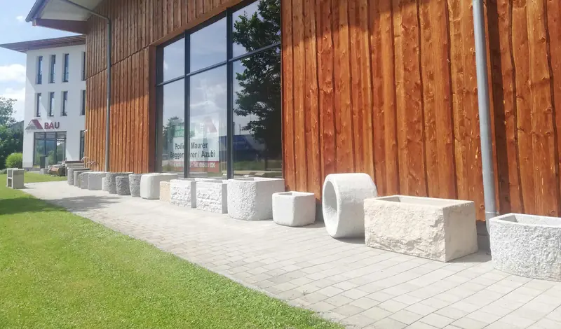

Bauunternehmen · Bad Birnbach · seit 1958
Wir bauen Ihren Wohn(t)raum.
Vom ersten Entwurf bis zum Schlüssel: Massivbau, schlüsselfertige Häuser, Gewerbe- und Objektbau aus einer Hand. Ökologisch, nachhaltig, gesund.
Bauablauf
So entsteht Ihr Haus. Sieben Abschnitte, ein Ansprechpartner.
01Erdarbeiten
Mit eigenem Bagger und modernem Maschinenpark heben wir die Baugrube aus, verlegen Kanal und Leitungen und schaffen einen tragfähigen Grund.
Keller & Bodenplatte
Bodenplatte, Kellerwände und Decke aus Beton und Stahlbeton. Dazu Abdichtung und Verfüllung, damit von unten nichts nachkommt.
Mauerwerk
Stein auf Stein, gemauert von unseren Maurern und Meistern. Massivbau mit ökologischen Baustoffen sorgt für ein gesundes Wohnklima, über Generationen.
Decke & Dachstuhl
Geschossdecke, Giebel und Dachstuhl. Wir koordinieren alle Gewerke, damit jeder Schritt sauber auf den nächsten folgt.
Dach
Mit der Dachdeckung ist das Haus dicht. Der Rohbau steht, termingerecht und sauber übergeben.
Ausbau
Innen- und Außenputz, Estrich, Dämmung, Fenster und Türen. Auf Wunsch auch Heizung, Sanitär und Elektro, alles aus einer Hand.
Außenanlage
Pflaster, Natursteinmauern, Bepflanzung und Rasen. Mit uns wird Ihr Garten, Ihre Zufahrt oder Ihr Innenhof zum Paradies.
Schlüsselfertig
Ihr Zuhause.
Aus einer Hand.
Ein Ansprechpartner von der Beratung und Grundstückssuche über die Planung bis zur Schlüsselübergabe. Und auch danach sind wir für Sie da.
Projekt anfragenGegründet von Hermann Apfel. Seit 2000 in zweiter Generation geführt.
Mitarbeiter, darunter Meister, Facharbeiter und Auszubildende.
Aktionsradius rund um Bad Birnbach. Regionale Baustellen, kurze Wege.
Ansprechpartner von der Idee bis zur Nachbetreuung.
Leistungen
Alles rund ums Bauen.
Ob als alleiniger Bauträger oder in Kooperation, für private Bauherren, Gewerbe oder den sozialen Wohnungsbau: Wir begleiten Sie von der Beratung bis zum schlüsselfertigen Haus in Massivbauweise.
01HausbauRohbau oder schlüsselfertig
Egal ob Rohbau oder alle Komponenten aus einer Hand: vom Keller bis zum Dachstuhl über Innenausbau, Heizung und Sanitär und Elektroinstallation bis zum Traumgarten. Und das aus einem bestimmten Grund: Weil wir das können.
02Gewerbe- & ObjektbauHallen, Büros, Autohäuser
Lagerhalle, Praxis, Ausstellungsgebäude, Produktionsstätte oder Bürogebäude: Zu unseren Kunden gehören Autohäuser aus der Region, große Gewerbebetriebe und Landwirte. Wir planen und bauen nach Ihren Wünschen, damit Ihr Betrieb wachsen kann.
03PlanungEntwurf, 3D, Eingabeplan
Sie bringen die Ideen, wir zeichnen mit Ihnen die ersten Skizzen. Ihr Haus sehen Sie schon vor dem ersten Spatenstich in 3D. Den Eingabeplan mit vollständiger Dokumentation für die Baugenehmigung erstellen wir ebenfalls.
04BauträgerHäuser, Grundstücke, Wohnungen
Eine passende Immobilie zu finden ist heute nicht leicht. Wir sind kein Online-Portal, sondern persönlich für Sie da. Ob Haus, Baugrundstück oder Wohnung: Exposé und Unterlagen schicken wir Ihnen gerne zu.
05Garten- & LandschaftsbauAußenanlagen mit Leben
Wir geben Ihren Außenanlagen Leben: Erdarbeiten, Pflasterarbeiten, Natursteinmauern, Bepflanzung und Rasenansaat. Für die Neuanlage genauso wie für die Umgestaltung.
06NatursteinhandelAusstellung an der B388
Natursteintröge, Granitbrunnen, Figuren, Mauersteine und Zierkies. Zu sehen in unserer Ausstellung direkt an der B388 vor Bad Birnbach.
Zur Ausstellung- Neubau
- Schlüsselfertiges Bauen
- Ausbau
- Modernisierung & Sanierung
- Innen- & Außenputz
- Erd- & Kanalarbeiten
- Estricharbeiten
- Dämmarbeiten
- Pflasterarbeiten
- Abdichtungsarbeiten
- Beton- & Stahlbetonarbeiten
- Nutzungsänderung
Referenzen
Gebaut in Niederbayern.
Impressionen aus über 60 Jahren. Weitere Referenzen und Besichtigungen gerne auf Anfrage.
01 / 10Einsatzgebiet
Regionale Baustellen. Kurze Wege.
Wir bauen in einem Aktionsradius von 80 Kilometern rund um unseren Firmensitz in Nindorf. Das heißt: schnell vor Ort, persönlich erreichbar und Mitarbeiter, die abends zu Hause sind.
- Pfarrkirchen
- Postmünster
- Triftern
- Anzenkirchen
- Dietersburg
- Egglham
- Pocking
Unternehmen
Tradition & Moderne.
Wir sind ein leistungsfähiger, mittelständischer Baubetrieb mit erfahrenen, langjährigen und engagierten Mitarbeitern. Seit 1958 in Familienhand.

„Die Liebe zum Bau wurde mir bereits in die Wiege gelegt. Schon als Kind war ich mir sicher, dass ich einmal das Baugeschäft übernehmen werde.“
- 1958
Gründung
Hermann Apfel gründet das Baugeschäft in Bad Birnbach.
- 1991
Kammersieger
Matthias Apfel schließt seine Lehre zum Maurer als Kammersieger und 2. Landessieger ab.
- 1995
Meisterbrief
Maurermeisterprüfung im Bauhandwerk, als Jahrgangsbester.
- 2000
Übergabe
Die Eltern übergeben den Betrieb an Matthias Apfel und stehen ihm noch viele Jahre mit Rat und Tat zur Seite.
- 2007
Naturstein
Kauf des Grundstücks an der B388 und Übernahme des Inventars eines Garten- und Landschaftsbaubetriebs. Der Grundstein für den Natursteinhandel.
- 2009
Erste Hausmesse
Die erste große Hausmesse im Bereich Garten- und Landschaftsbau.
- 2013
Neues Firmengelände
Zwei Hallen mit viel Lagerfläche und durchdachten Arbeitsabläufen.
- 2014
Neues Bürogebäude
Weil die Firma stetig wächst, platzte das alte Büro aus allen Nähten.
- 2015
Büroturm
Der neue Büroturm am Eck zur B388 als vorerst letzter Bauabschnitt.
- Heute
Über 30 Mitarbeiter
Eigener Maschinen- und Fuhrpark, Baustellen im Umkreis von 80 Kilometern und Auszubildende, die mit uns wachsen.

Philosophie
„Ein Apfel am Tag hält den Doktor fern.“
Wir nehmen uns unseren Namen zu Herzen. Nicht nur die Ernährung sorgt für Ihre Gesundheit: Nachhaltiges Bauen mit ökologischen Rohstoffen sorgt für ein gesundes Wohnklima und schont dabei die Umwelt. Für Sie und für die nachfolgenden Generationen.
- 01ÖkologischAusgewählte, natürliche Baustoffe
- 02NachhaltigMassiv gebaut für Generationen
- 03GesundAngenehmes Wohnklima in Ihren vier Wänden
Karriere
Bau mit uns.
Du suchst eine neue Herausforderung mit spannenden Aufgaben in einem angenehmen Betriebsklima? Dann bewirb dich bei uns. Die Kurzbewerbung dauert keine zwei Minuten.
- Maurer (m/w/d)Vollzeit · Hochbau
- Vorarbeiter / Polier (m/w/d)Vollzeit · Führung
- Maschinist (m/w/d)Vollzeit · Maschinenpark
- Ausbildung zum Maurer (m/w/d)3 Jahre · Berufsschule Pfarrkirchen
Das bieten wir dir
- Moderner Maschinen- und Fuhrpark
- Nur regionale Baustellen
- Flache Hierarchien und kurze Entscheidungswege
- Motiviertes, hilfsbereites Team
- Verantwortungsgerechte Vergütung
- Sehr hohe Übernahmequote nach der Ausbildung
Natursteinhandel
Naturstein an der B388.
Zu jedem Haus gehört ein schöner Garten. In unserer Ausstellung in Nindorf finden Sie Natursteinprodukte mit höchstem Qualitätsanspruch, ehrliche Beratung und ein faires Preis-Leistungs-Verhältnis.




Besuchen Sie uns
- Montag bis Donnerstag
- 07:00 – 17:30 Uhr
- Freitag
- 07:00 – 13:00 Uhr
Pfarrhofstraße 19
84364 Bad Birnbach-Nindorf
Kontakt
Wir freuen uns auf Ihre Herausforderung.
Zentrale
08563 826 info [at] apfel-bau.deApfel Bau GmbH & Co. KG
Pfarrhofstraße 19
84364 Bad Birnbach-Nindorf
Mo–Do 07:00–17:30 · Fr 07:00–13:00
Geschäftsleitung
Katrin & Matthias ApfelBilanzbuchhalterin · Maurermeister08563 826Büro
Maria BauerBürokauffrau08563 97 85 580m.bauer [at] apfel-bau.deProjektleitung
Michael SpielbauerProjektleiter08563 97 85 584m.spielbauer [at] apfel-bau.deTechnik
Konrad HeublhuberBautechniker08563 97 85 582k.heublhuber [at] apfel-bau.deBaustelle
Markus EiglspergerMaurermeister08563 97 85 583m.eiglsperger [at] apfel-bau.de